<<行商>>
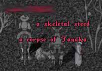
いつもは「何するんですか。」とか言いますけど
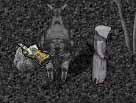
言いません。
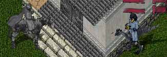
たまには犬死覚悟でつっこみますけど、しません。
人には
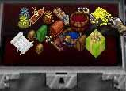
それぞれの
事情があります。
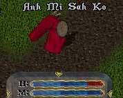
そんなわけで死にたくないんです。
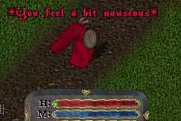
でも、そんな人の事情なんて
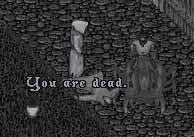
他人には関係の無いことです。
ああ。やっぱり赤ネームはつらいなあ。
そう思っていたら
この方、蘇生の魔法を唱えてくれたんです。
場所はムングロ。
ガード圏内。
赤ネームを蘇生すると犯罪者扱いになります。
近くにNPC、PCがガードを呼んだらひとたまりもありません。
そんな犯罪者になってまでも蘇生してくれるなんて。
なんて、優しい人なんだ。
私はどうしてもお礼がしたかった。
でも、私はお金もアイテムも無い。
できるのは言葉のみのお礼。
悲しいけど、それが現実。
でも心を込めてお礼を言った。
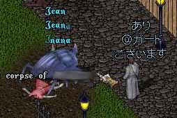
私の言葉は間違っていた。
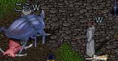
ごめんなさい。自分でやって何だけど、面白かった。
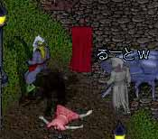
通りすがりの人がグレーネームの死体だから問題なくルートしていきます。
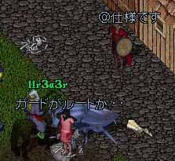
犯罪者フラグが消えたので蘇生したら
ワンドとかに保険かけてなかったらしいです。
なんか、この「ガードがルートか・・・」
笑いました。
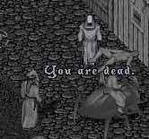
天罰。
（通りすがりのルートした人に殺された）
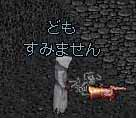
心のこもってない謝罪をして赤ひーらー探し。
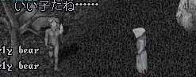
テイマーさんがいた。
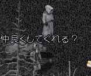
仲良くしてくれる？
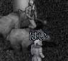
はい。と言うと、突然赤ネームが出たのでびっくりしたみたい。
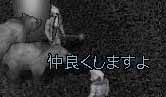
うざ。
そしたら、この方
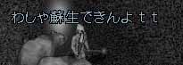
おじいちゃんでした。
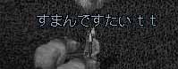
そして博多っ子でした。
RPしてるなあ。と感心して赤ヒーラー見つけて
蘇生。
ピットにワンド拾いにいった。
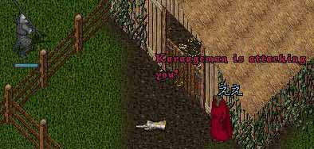
いきなり、ホコツな方があたっく。
しかもテレポが出来ないようで、ぐるーっと回ってピット内に入ってきた。
あきらかに初期キャラっぽい。
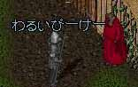
悪いPKなので襲われました。
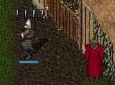
ディザームすると
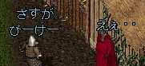
さすがPK。
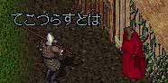
手こずらすとは。
とりあえず殺してほしいのかなあ。と魔法を打つ。
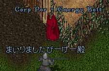
あ、ごめん。もう開放しちゃった。
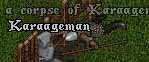
カラアゲマン死亡。
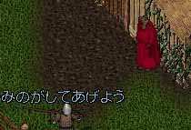
蘇生したら、みのがしてもらった。
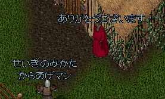
正義の味方らしい。
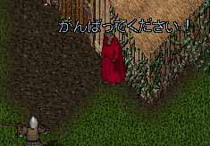
心にも無いことを言う。
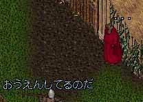
「実は、こうして戦いながらPKを応援しているのだ。」
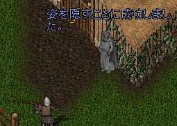
なんか、日本語が不自由そうなのでハイド。
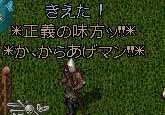
焦るからあげマン。
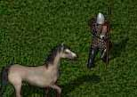
どうするのかなと見守ってると。
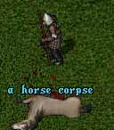
馬の皮を集めはじめた。
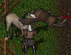
馬を殺しまくるからあげマン。
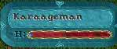
でも、ほっとけば死にそうだったので放置＆RO。
もう、これでもかというくらいのHOKOTUっぷりのRPを見せ付けられながら
私もがんばろうと思った。
実は最近、鉱山PKだけってのも、辛くなってきました。
というのも、保険金のかかってない堀師さんが増えてきているんです。
なんかどっかのサイトで鉱山PKを得意気にやってる所があるらしく
掘師さんも、それなりの対応をしているようです。
正直なところ、あと2回死んだら保険金切れます。
やばいです。
何かしら副業を考えないといけません。
しかし、売るものは何も無い。
いや。
無ければ作ればいいんだ。
何が作れる？
そうだ。
私は鉱山PKだけど
根っからの詩人。
（いつからだ）
私のポエムを売ろう。
話は決まった。
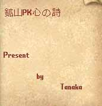
完成。
ポエム売ります。
売る相手はもちろん。
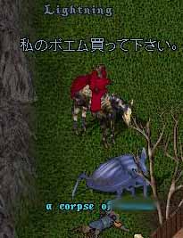
堀師さん。
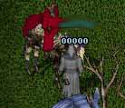
「。。。。。。。」
まあ、普通の反応。
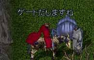
強制販売。
堀師さん「おいくらですか」
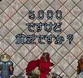
高い上に失礼。
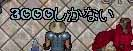
失礼じゃなかった。
なんか、鍛冶パワスク買ったばかりだったそうで
お金なかったそうです。
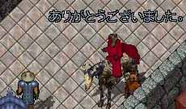
結局6４２GPにて販売。
でも、売れるもんだ。
がんばって行商。
お金持ちの掘師さんいませんかーー。
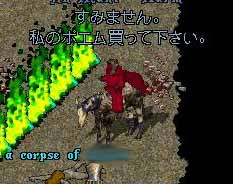
買って下さい。
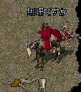
幽霊姿も出してもらえない。
まあ、当たり前。
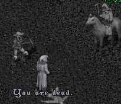
殺されても。
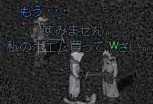
販売する。
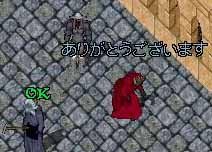
買ってくれた。うれC。
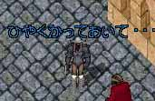
なんと、5kのところ20kで買ってくれました。
すんごいうれしい。
でも、秘薬買えないんですよ。
保険代にします。ありがとうございます。
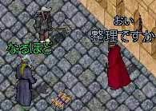
すると、色々くれた。
銀行の整理かと思ったけど、
LTW高CH1本、GHW高CH１本、FSスクロールたくさん！、
パワスク瞑想、レジ、盾１０までもらった。
うおおお。ポエム販売成功！！！
このページを見てくださっているようで
がんばってくださいまで、言われる。
ありがとうございます！！
ほんと、うれしかったです。
私もがんばりますけど
お二方はこれから
鉱山PKに手助けしたと、
後ろ指さされる生活でしょうが、がんばってください。
ポエム在庫7冊。
おしまい。